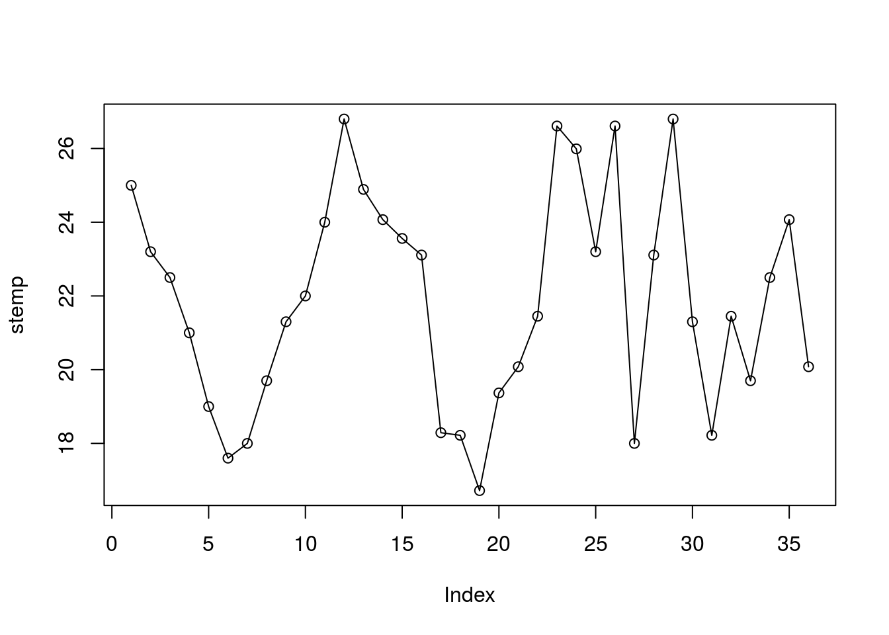
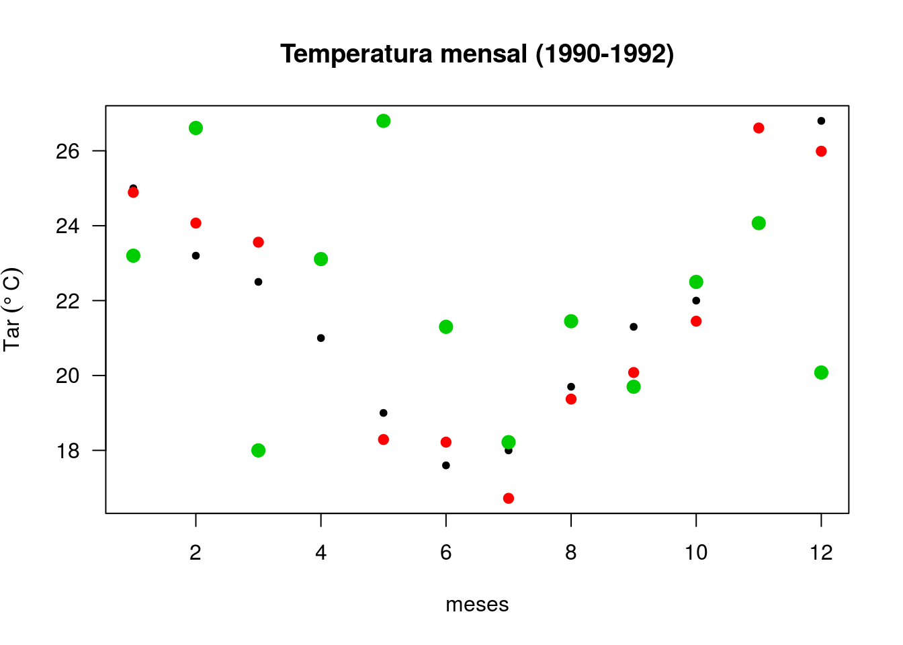

7.2 Matriz
Vetores são dados unidimensionais. Vetores multidimensionais são denominados arranjos (tradução do termo em inglês array). As matrizes são um caso especial de array em que o número de dimensões é igual a 2, uma dimensão corresponde as linhas e a outra as colunas. Os dados armazenados em uma matriz só podem ser de um tipo de dado (ou numeric, ou character, por exemplo).
7.2.1 Criação de matrizes
7.2.1.1 Função matrix()
Uma forma mais clara de se criar uma matriz é usando a função matrix().
Ao aplicarmos a função matrix() a um vetor sem especificar nenhum argumento ela produz uma matriz de uma coluna.
# atribuindo novas dimensões ao vetor
m <- matrix(vetor) # matriz de uma coluna
m
#> [,1]
#> [1,] 0
#> [2,] 1
#> [3,] -1
#> [4,] -2
#> [5,] 3
#> [6,] 5
#> [7,] -5Se desejamos construir uma matriz com 3 linhas e 4 colunas a partir do vetor vetor podemos fazer da seguinte forma:
# criando a matriz gerada com dim
mat <- matrix(vetor, nrow = 3, ncol = 4)
#> Warning in matrix(vetor, nrow = 3, ncol = 4): data length [7] is not a sub-
#> multiple or multiple of the number of rows [3]
mat
#> [,1] [,2] [,3] [,4]
#> [1,] 0 -2 -5 -1
#> [2,] 1 3 0 -2
#> [3,] -1 5 1 3
# não há necessidade de especificar ambos ncol e nrow
mat <- matrix(vetor, nrow = 3)
#> Warning in matrix(vetor, nrow = 3): data length [7] is not a sub-multiple or
#> multiple of the number of rows [3]
mat
#> [,1] [,2] [,3]
#> [1,] 0 -2 -5
#> [2,] 1 3 0
#> [3,] -1 5 1No exemplo a seguir os dados do vetor aparecem distribuídos ao longo das linhas e não das colunas como no caso acima. Nós definimos isso com o argumento byrow = TRUE da função matrix():
7.2.2 Nomes das linhas e colunas de uma matriz
Nas matrizes, assim como nos vetores, também é possível dar nomes aos elementos para tornar a leitura da informação mais clara.
Vamos usar os vetores de temperatura mensal dos anos de 1990:1992para construir uma matriz com os meses ao longo das colunas e os anos ao longo das linhas.
# temperatura do ar média mensal do ano de 1990
temp90 <- c(25, 23.2, 22.5, 21, 19, 17.6, 18, 19.7, 21.3, 22, 24, 26.8)
# temperatura do ar média mensal do ano de 1991
temp91 <- c(24.89, 24.07, 23.56, 23.11, 18.29, 18.22, 16.72, 19.37, 20.08, 21.45,
26.61, 25.99)
# temperatura do ar média mensal do ano de 1992
temp92 <- c(23.2, 26.61, 18, 23.11, 26.8, 21.3, 18.22, 21.45, 19.7, 22.5, 24.07,
20.08)
# vetor com as temperaturas dos 3 anos
vtemp <- c(temp90, temp91, temp92)
vtemp
#> [1] 25.00 23.20 22.50 21.00 19.00 17.60 18.00 19.70 21.30 22.00 24.00 26.80
#> [13] 24.89 24.07 23.56 23.11 18.29 18.22 16.72 19.37 20.08 21.45 26.61 25.99
#> [25] 23.20 26.61 18.00 23.11 26.80 21.30 18.22 21.45 19.70 22.50 24.07 20.08
# arranjar matrix com meses ao longo das colunas e anos ao longo das linhas
temp_mat <- matrix(vtemp, ncol = 12, byrow = TRUE)
temp_mat
#> [,1] [,2] [,3] [,4] [,5] [,6] [,7] [,8] [,9] [,10] [,11] [,12]
#> [1,] 25.00 23.20 22.50 21.00 19.00 17.60 18.00 19.70 21.30 22.00 24.00 26.80
#> [2,] 24.89 24.07 23.56 23.11 18.29 18.22 16.72 19.37 20.08 21.45 26.61 25.99
#> [3,] 23.20 26.61 18.00 23.11 26.80 21.30 18.22 21.45 19.70 22.50 24.07 20.08
# cópia da matriz temp_mat (sem nomes)
temp_matO <- temp_matAtribuindo nomes às linhas (rownames()) e colunas (colnames()) da matriz criada dos vetores de temperatura mensal (temp_mat).
# atribuindo nomes as colunas e linhas da temp_mat
rownames(temp_mat) <- c("ano1990", "ano1991", "ano1992")
colnames(temp_mat) <- c("Jan", "Fev", "Mar", "Abr", "Mai", "Jun", "Jul", "Ago", "Set",
"Out", "Nov", "Dez")
temp_mat
#> Jan Fev Mar Abr Mai Jun Jul Ago Set Out Nov Dez
#> ano1990 25.00 23.20 22.50 21.00 19.00 17.60 18.00 19.70 21.30 22.00 24.00 26.80
#> ano1991 24.89 24.07 23.56 23.11 18.29 18.22 16.72 19.37 20.08 21.45 26.61 25.99
#> ano1992 23.20 26.61 18.00 23.11 26.80 21.30 18.22 21.45 19.70 22.50 24.07 20.087.2.3 Indexação de matrizes
Como acessamos o valor de temperatura de maio de 1991 na matriz temp_mat?
temp_mat # matriz de temperaturas com nomes
#> Jan Fev Mar Abr Mai Jun Jul Ago Set Out Nov Dez
#> ano1990 25.00 23.20 22.50 21.00 19.00 17.60 18.00 19.70 21.30 22.00 24.00 26.80
#> ano1991 24.89 24.07 23.56 23.11 18.29 18.22 16.72 19.37 20.08 21.45 26.61 25.99
#> ano1992 23.20 26.61 18.00 23.11 26.80 21.30 18.22 21.45 19.70 22.50 24.07 20.08
temp_matO # matriz de temperaturas sem nomes
#> [,1] [,2] [,3] [,4] [,5] [,6] [,7] [,8] [,9] [,10] [,11] [,12]
#> [1,] 25.00 23.20 22.50 21.00 19.00 17.60 18.00 19.70 21.30 22.00 24.00 26.80
#> [2,] 24.89 24.07 23.56 23.11 18.29 18.22 16.72 19.37 20.08 21.45 26.61 25.99
#> [3,] 23.20 26.61 18.00 23.11 26.80 21.30 18.22 21.45 19.70 22.50 24.07 20.08
# qual a linha do ano de 1991
linha <- 2
# qual a coluna do mês de maio
coluna <- 5
# extraindo
temp_mat[linha, coluna]
#> [1] 18.29
# ou usando os nomes
temp_mat["ano1991", "Mai"]
#> [1] 18.29Com o operador [ podemos usar todos os esquemas de indexação vistos em vetores.
# temperaturas de todos janeiros
temp_mat[, 1]
#> ano1990 ano1991 ano1992
#> 25.00 24.89 23.20
temp_mat[, "Jan"]
#> ano1990 ano1991 ano1992
#> 25.00 24.89 23.20
# só as temperaturas de 1990 e 1993
temp_mat[-2, ]
#> Jan Fev Mar Abr Mai Jun Jul Ago Set Out Nov Dez
#> ano1990 25.0 23.20 22.5 21.00 19.0 17.6 18.00 19.70 21.3 22.0 24.00 26.80
#> ano1992 23.2 26.61 18.0 23.11 26.8 21.3 18.22 21.45 19.7 22.5 24.07 20.08
# só as temperaturas dos verões
temp_mat[, c(12, 1, 2)]
#> Dez Jan Fev
#> ano1990 26.80 25.00 23.20
#> ano1991 25.99 24.89 24.07
#> ano1992 20.08 23.20 26.61
# invertendo ordem das colunas
temp_mat[, ncol(temp_mat):1]
#> Dez Nov Out Set Ago Jul Jun Mai Abr Mar Fev Jan
#> ano1990 26.80 24.00 22.00 21.30 19.70 18.00 17.60 19.00 21.00 22.50 23.20 25.00
#> ano1991 25.99 26.61 21.45 20.08 19.37 16.72 18.22 18.29 23.11 23.56 24.07 24.89
#> ano1992 20.08 24.07 22.50 19.70 21.45 18.22 21.30 26.80 23.11 18.00 26.61 23.20
# invertendo ordem das colunas e das linhas
temp_mat[3:1, 12:1]
#> Dez Nov Out Set Ago Jul Jun Mai Abr Mar Fev Jan
#> ano1992 20.08 24.07 22.50 19.70 21.45 18.22 21.30 26.80 23.11 18.00 26.61 23.20
#> ano1991 25.99 26.61 21.45 20.08 19.37 16.72 18.22 18.29 23.11 23.56 24.07 24.89
#> ano1990 26.80 24.00 22.00 21.30 19.70 18.00 17.60 19.00 21.00 22.50 23.20 25.00
# invertendo ordem das colunas e das linhas
temp_mat[c(2, 1, 3), c(6:1, 12, 10:8)]
#> Jun Mai Abr Mar Fev Jan Dez Out Set Ago
#> ano1991 18.22 18.29 23.11 23.56 24.07 24.89 25.99 21.45 20.08 19.37
#> ano1990 17.60 19.00 21.00 22.50 23.20 25.00 26.80 22.00 21.30 19.70
#> ano1992 21.30 26.80 23.11 18.00 26.61 23.20 20.08 22.50 19.70 21.45
# só as temperaturas dos invernos
temp_mat[, colnames(temp_mat) %in% c("Jun", "Jul", "Ago")]
#> Jun Jul Ago
#> ano1990 17.60 18.00 19.70
#> ano1991 18.22 16.72 19.37
#> ano1992 21.30 18.22 21.45
# exceto as temperaturas dos invernos
temp_mat[, -which(colnames(temp_mat) %in% c("Jun", "Jul", "Ago"))]
#> Jan Fev Mar Abr Mai Set Out Nov Dez
#> ano1990 25.00 23.20 22.50 21.00 19.00 21.30 22.00 24.00 26.80
#> ano1991 24.89 24.07 23.56 23.11 18.29 20.08 21.45 26.61 25.99
#> ano1992 23.20 26.61 18.00 23.11 26.80 19.70 22.50 24.07 20.08
# seleção de colunas intercaladas da matriz: mês sim, mês nao
temp_mat[, c(TRUE, FALSE)]
#> Jan Mar Mai Jul Set Nov
#> ano1990 25.00 22.50 19.00 18.00 21.30 24.00
#> ano1991 24.89 23.56 18.29 16.72 20.08 26.61
#> ano1992 23.20 18.00 26.80 18.22 19.70 24.07
# 2 meses sim, 1 mes não
temp_mat[, c(TRUE, TRUE, FALSE)]
#> Jan Fev Abr Mai Jul Ago Out Nov
#> ano1990 25.00 23.20 21.00 19.00 18.00 19.70 22.00 24.00
#> ano1991 24.89 24.07 23.11 18.29 16.72 19.37 21.45 26.61
#> ano1992 23.20 26.61 23.11 26.80 18.22 21.45 22.50 24.07Podemos fazer uso do operador [ de forma aninhada:
temp_mat
#> Jan Fev Mar Abr Mai Jun Jul Ago Set Out Nov Dez
#> ano1990 25.00 23.20 22.50 21.00 19.00 17.60 18.00 19.70 21.30 22.00 24.00 26.80
#> ano1991 24.89 24.07 23.56 23.11 18.29 18.22 16.72 19.37 20.08 21.45 26.61 25.99
#> ano1992 23.20 26.61 18.00 23.11 26.80 21.30 18.22 21.45 19.70 22.50 24.07 20.08
temp_mat[, 1:6]
#> Jan Fev Mar Abr Mai Jun
#> ano1990 25.00 23.20 22.50 21.00 19.00 17.60
#> ano1991 24.89 24.07 23.56 23.11 18.29 18.22
#> ano1992 23.20 26.61 18.00 23.11 26.80 21.30
temp_mat[, 1:6]["ano1991", ]
#> Jan Fev Mar Abr Mai Jun
#> 24.89 24.07 23.56 23.11 18.29 18.22
temp_mat[, 1:6]["ano1991", ][2:4]
#> Fev Mar Abr
#> 24.07 23.56 23.11Podemos substituir valores de uma submatriz da matriz:
M <- temp_mat
M
#> Jan Fev Mar Abr Mai Jun Jul Ago Set Out Nov Dez
#> ano1990 25.00 23.20 22.50 21.00 19.00 17.60 18.00 19.70 21.30 22.00 24.00 26.80
#> ano1991 24.89 24.07 23.56 23.11 18.29 18.22 16.72 19.37 20.08 21.45 26.61 25.99
#> ano1992 23.20 26.61 18.00 23.11 26.80 21.30 18.22 21.45 19.70 22.50 24.07 20.08
# 1990 e 1992 os meses de jan e dez
M[c(1, 3), c(1, 12)]
#> Jan Dez
#> ano1990 25.0 26.80
#> ano1992 23.2 20.08
# matriz com novos valores
matrix(c(21, 22, 23, 24), ncol = 2)
#> [,1] [,2]
#> [1,] 21 23
#> [2,] 22 24
# substituindo
M[c(1, 3), c(1, 12)] <- matrix(c(21, 22, 23, 24), ncol = 2)
M
#> Jan Fev Mar Abr Mai Jun Jul Ago Set Out Nov Dez
#> ano1990 21.00 23.20 22.50 21.00 19.00 17.60 18.00 19.70 21.30 22.00 24.00 23.00
#> ano1991 24.89 24.07 23.56 23.11 18.29 18.22 16.72 19.37 20.08 21.45 26.61 25.99
#> ano1992 22.00 26.61 18.00 23.11 26.80 21.30 18.22 21.45 19.70 22.50 24.07 24.007.2.4 Número de linhas e colunas de uma matriz
M
#> Jan Fev Mar Abr Mai Jun Jul Ago Set Out Nov Dez
#> ano1990 21.00 23.20 22.50 21.00 19.00 17.60 18.00 19.70 21.30 22.00 24.00 23.00
#> ano1991 24.89 24.07 23.56 23.11 18.29 18.22 16.72 19.37 20.08 21.45 26.61 25.99
#> ano1992 22.00 26.61 18.00 23.11 26.80 21.30 18.22 21.45 19.70 22.50 24.07 24.00
ncol(temp_mat)
#> [1] 12
nrow(temp_mat)
#> [1] 3
dim(temp_mat)
#> [1] 3 12Existem funções específicas para saber a coluna e a linha de cada elemento de uma matriz.
# colunas de cada elemento da matriz
col(temp_mat)
#> [,1] [,2] [,3] [,4] [,5] [,6] [,7] [,8] [,9] [,10] [,11] [,12]
#> [1,] 1 2 3 4 5 6 7 8 9 10 11 12
#> [2,] 1 2 3 4 5 6 7 8 9 10 11 12
#> [3,] 1 2 3 4 5 6 7 8 9 10 11 12
# linhas de cada elemento da matriz
row(temp_mat)
#> [,1] [,2] [,3] [,4] [,5] [,6] [,7] [,8] [,9] [,10] [,11] [,12]
#> [1,] 1 1 1 1 1 1 1 1 1 1 1 1
#> [2,] 2 2 2 2 2 2 2 2 2 2 2 2
#> [3,] 3 3 3 3 3 3 3 3 3 3 3 37.2.5 Adição de linhas e colunas a uma matriz
Na construção de um vetor concatenaram-se valores com a função c(). A concatenação por linhas ou colunas em uma matriz pode ser feita com as funções rbind() e cbind(), respectivamente. No exemplo abaixo concatenam-se vetores de temperaturas mensais de 3 anos (ver seção 7.2.2), primeiro por linhas e depois por colunas.
(temp_mat_lin <- rbind(temp90, temp91, temp92))
#> [,1] [,2] [,3] [,4] [,5] [,6] [,7] [,8] [,9] [,10] [,11] [,12]
#> temp90 25.00 23.20 22.50 21.00 19.00 17.60 18.00 19.70 21.30 22.00 24.00 26.80
#> temp91 24.89 24.07 23.56 23.11 18.29 18.22 16.72 19.37 20.08 21.45 26.61 25.99
#> temp92 23.20 26.61 18.00 23.11 26.80 21.30 18.22 21.45 19.70 22.50 24.07 20.08
(temp_mat_col <- cbind(temp90, temp91, temp92))
#> temp90 temp91 temp92
#> [1,] 25.0 24.89 23.20
#> [2,] 23.2 24.07 26.61
#> [3,] 22.5 23.56 18.00
#> [4,] 21.0 23.11 23.11
#> [5,] 19.0 18.29 26.80
#> [6,] 17.6 18.22 21.30
#> [7,] 18.0 16.72 18.22
#> [8,] 19.7 19.37 21.45
#> [9,] 21.3 20.08 19.70
#> [10,] 22.0 21.45 22.50
#> [11,] 24.0 26.61 24.07
#> [12,] 26.8 25.99 20.087.2.6 Matriz transposta e diagonal
A primeira entre as diversas funções de álgebra matricial no R é a transposta t().
temp_mat
#> Jan Fev Mar Abr Mai Jun Jul Ago Set Out Nov Dez
#> ano1990 25.00 23.20 22.50 21.00 19.00 17.60 18.00 19.70 21.30 22.00 24.00 26.80
#> ano1991 24.89 24.07 23.56 23.11 18.29 18.22 16.72 19.37 20.08 21.45 26.61 25.99
#> ano1992 23.20 26.61 18.00 23.11 26.80 21.30 18.22 21.45 19.70 22.50 24.07 20.08
t(temp_mat)
#> ano1990 ano1991 ano1992
#> Jan 25.0 24.89 23.20
#> Fev 23.2 24.07 26.61
#> Mar 22.5 23.56 18.00
#> Abr 21.0 23.11 23.11
#> Mai 19.0 18.29 26.80
#> Jun 17.6 18.22 21.30
#> Jul 18.0 16.72 18.22
#> Ago 19.7 19.37 21.45
#> Set 21.3 20.08 19.70
#> Out 22.0 21.45 22.50
#> Nov 24.0 26.61 24.07
#> Dez 26.8 25.99 20.08
# diagonal
diag(temp_mat)
#> [1] 25.00 24.07 18.00Operações matriciais adicionais são apresentadas no Apêndice A.
7.2.7 Conversão de matriz para vetor
Frequentemente é mais conveniente trabalhar com um vetor do que com uma matriz, por isso precisamos saber como fazer o caminho inverso. Quando criamos uma matriz (p. ex.: temp_mat) no início da seção ela foi baseada em um vetor (vtemp). Como fazemos para voltar aquele vetor original a partir da matriz?
temp_mat[1:nrow(temp_mat) * ncol(temp_mat) ]
#> [1] 23.11 21.45 20.08
# vetor de temperaturas
vtemp <- temp_mat[1:(ncol(temp_mat) * nrow(temp_mat))]
vtemp
#> [1] 25.00 24.89 23.20 23.20 24.07 26.61 22.50 23.56 18.00 21.00 23.11 23.11
#> [13] 19.00 18.29 26.80 17.60 18.22 21.30 18.00 16.72 18.22 19.70 19.37 21.45
#> [25] 21.30 20.08 19.70 22.00 21.45 22.50 24.00 26.61 24.07 26.80 25.99 20.08
# outra forma de converte temp_mat para vetor
c(temp_mat)
#> [1] 25.00 24.89 23.20 23.20 24.07 26.61 22.50 23.56 18.00 21.00 23.11 23.11
#> [13] 19.00 18.29 26.80 17.60 18.22 21.30 18.00 16.72 18.22 19.70 19.37 21.45
#> [25] 21.30 20.08 19.70 22.00 21.45 22.50 24.00 26.61 24.07 26.80 25.99 20.08
# função formal para converter
as.vector(temp_mat)
#> [1] 25.00 24.89 23.20 23.20 24.07 26.61 22.50 23.56 18.00 21.00 23.11 23.11
#> [13] 19.00 18.29 26.80 17.60 18.22 21.30 18.00 16.72 18.22 19.70 19.37 21.45
#> [25] 21.30 20.08 19.70 22.00 21.45 22.50 24.00 26.61 24.07 26.80 25.99 20.08
# para desmanchar a matriz com os elementos seguindo a ordem das linhas
c(t(temp_mat))
#> [1] 25.00 23.20 22.50 21.00 19.00 17.60 18.00 19.70 21.30 22.00 24.00 26.80
#> [13] 24.89 24.07 23.56 23.11 18.29 18.22 16.72 19.37 20.08 21.45 26.61 25.99
#> [25] 23.20 26.61 18.00 23.11 26.80 21.30 18.22 21.45 19.70 22.50 24.07 20.08
as.vector(t(temp_mat))
#> [1] 25.00 23.20 22.50 21.00 19.00 17.60 18.00 19.70 21.30 22.00 24.00 26.80
#> [13] 24.89 24.07 23.56 23.11 18.29 18.22 16.72 19.37 20.08 21.45 26.61 25.99
#> [25] 23.20 26.61 18.00 23.11 26.80 21.30 18.22 21.45 19.70 22.50 24.07 20.08
# serie temporal de temp_mat
stemp <- c(t(temp_mat))
plot(stemp, type = "o")
# criar matriz com colunas temp e meses 1:12
cbind(rep(1:12, nrow(temp_mat)), stemp)
#> stemp
#> [1,] 1 25.00
#> [2,] 2 23.20
#> [3,] 3 22.50
#> [4,] 4 21.00
#> [5,] 5 19.00
#> [6,] 6 17.60
#> [7,] 7 18.00
#> [8,] 8 19.70
#> [9,] 9 21.30
#> [10,] 10 22.00
#> [11,] 11 24.00
#> [12,] 12 26.80
#> [13,] 1 24.89
#> [14,] 2 24.07
#> [15,] 3 23.56
#> [16,] 4 23.11
#> [17,] 5 18.29
#> [18,] 6 18.22
#> [19,] 7 16.72
#> [20,] 8 19.37
#> [21,] 9 20.08
#> [22,] 10 21.45
#> [23,] 11 26.61
#> [24,] 12 25.99
#> [25,] 1 23.20
#> [26,] 2 26.61
#> [27,] 3 18.00
#> [28,] 4 23.11
#> [29,] 5 26.80
#> [30,] 6 21.30
#> [31,] 7 18.22
#> [32,] 8 21.45
#> [33,] 9 19.70
#> [34,] 10 22.50
#> [35,] 11 24.07
#> [36,] 12 20.08
# dados de temp e meses
tempdat <- cbind(1:12, stemp)
# plot da temperatura pelos meses (os meses repetem)
plot(
tempdat,
type = "p", # tipo de grafico: pontos
pch = 20, # codigo numérico do simbolo do ponto
col = rep(1:3, each = ncol(temp_mat)), # cores dos pontos
cex = rep(seq(1, 2, by = 0.5), each = ncol(temp_mat)), # aumenta tamanho dos pontos
las = 1, # orientação dos labels dos eixos perpendiculares ao eixo
ylab = expression(Tar ~ (degree ~ C)), # label da variável y
xlab = "meses", # label da variavel x
main = "Temperatura mensal (1990-1992)" # título
) # end plot
# para entender a variação nas cores e símbolos usadas no gráfico
cbind(
meses = 1:12, temp = stemp,
cores = rep(1:3, each = ncol(temp_mat)), # cores
simb_tam = rep(seq(1, 2, by = 0.5), each = ncol(temp_mat))
) # tamanho dos símbolos
#> meses temp cores simb_tam
#> [1,] 1 25.00 1 1.0
#> [2,] 2 23.20 1 1.0
#> [3,] 3 22.50 1 1.0
#> [4,] 4 21.00 1 1.0
#> [5,] 5 19.00 1 1.0
#> [6,] 6 17.60 1 1.0
#> [7,] 7 18.00 1 1.0
#> [8,] 8 19.70 1 1.0
#> [9,] 9 21.30 1 1.0
#> [10,] 10 22.00 1 1.0
#> [11,] 11 24.00 1 1.0
#> [12,] 12 26.80 1 1.0
#> [13,] 1 24.89 2 1.5
#> [14,] 2 24.07 2 1.5
#> [15,] 3 23.56 2 1.5
#> [16,] 4 23.11 2 1.5
#> [17,] 5 18.29 2 1.5
#> [18,] 6 18.22 2 1.5
#> [19,] 7 16.72 2 1.5
#> [20,] 8 19.37 2 1.5
#> [21,] 9 20.08 2 1.5
#> [22,] 10 21.45 2 1.5
#> [23,] 11 26.61 2 1.5
#> [24,] 12 25.99 2 1.5
#> [25,] 1 23.20 3 2.0
#> [26,] 2 26.61 3 2.0
#> [27,] 3 18.00 3 2.0
#> [28,] 4 23.11 3 2.0
#> [29,] 5 26.80 3 2.0
#> [30,] 6 21.30 3 2.0
#> [31,] 7 18.22 3 2.0
#> [32,] 8 21.45 3 2.0
#> [33,] 9 19.70 3 2.0
#> [34,] 10 22.50 3 2.0
#> [35,] 11 24.07 3 2.0
#> [36,] 12 20.08 3 2.0